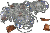
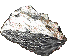
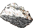
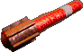
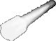

Category:Tools
Jump to navigation
Jump to search
Description
Tools are items that have specific, intended, non-combat uses related usually to gathering resources or improving non-combat skills, benefit characters in certain supportive ways. While some tools are craftable most of them you will need to find in some other ways.
Craftable Tools
Tent

| |
|---|---|
| A portable, packed tight tent, used commonly as a shelter in harsh environment of wasteland. | |
| Effect | Allows to create a personal hideout. |
| Weight | 10000 grams |
| Base Price | 1000 |
| Exp for Crafting | 230 |
| Requirments to craft | 10x 2x 2x |
| Notes | One of the most important tool in the game. For complex information go on item page. |
Rope
| A strong, thick line. About 45 feet in length. | |
|---|---|
| Effect | Quest |
| Weight | 4535 grams |
| Base Price | 25 |
| Exp for Crafting | 60 |
| Requirments to craft | 3x |
| Notes | Useable in "Sharing Problems" - Adytum quest. You can still dissamble it into cords if you ever find one. |
Radio

Lockpicks

Tools that can be used as a weapon
Hatchet
| Worn Hatchet. Its blade is still in good condition. | |
|---|---|
| Damage | 8 - 16 |
| Swing | AP: 4 |
| Range | 2 |
| Damage type | Normal |
| Weapon Perk | Close Range |
| Strength reqiuired | N/A |
| Weight | 3443 grams |
| Base price | 80 caps |
| Exp for Crafting | 30 |
| Blueprint | No |
| Requirments to craft: | 1x 1x 1x |
| Notes | Mostly a tool than allowes you to cut wood but you can also roleplay a last post-bombs viking on some poor ants, radscorpions and molerats. |
Pickaxe
| An ordinary pickaxe commonly used for mining related activities, simple yet effective. | |
|---|---|
| Damage | 13 - 17 |
| Swing | AP: 4 |
| Range | 2 |
| Damage type | Normal |
| Weapon Perk | Close Range |
| Strength reqiuired | N/A |
| Weight | 3443 grams |
| Base price | 80 caps |
| Exp for Crafting | 30 |
| Blueprint | No |
| Requirments to craft: | 1x1x |
| Notes | Mostly a tool that allowes you to mine minerals and ore but you can also bash heads of random critters like rats or even more random wastelanders. |
Primitive Tool

| |
|---|---|
| Piece of rock attached to a wooden stick in the most crudest way possible, can be helpful as a tool for various tasks. | |
| Damage | 6 - 15 |
| Swing | AP: 4 |
| Range | 2 |
| Damage type | Normal |
| Weapon Perk | Close Range |
| Strength required | N/A |
| Weight | 3443 grams |
| Base price | 60 caps |
| Exp for Crafting | 5 |
| Blueprint | No |
| Requirements to craft: | 1x |
| Notes | You can use it only few times before it breaks. When it breaks there's a chance to recover a flint. |
Shovel
| This is shovel for diggin diches and stuff. | |
|---|---|
| Damage | 4 - 8 |
| Thrust | AP: 4 |
| Range | 2 |
| Damage type | Normal |
| Weapon Perk | Close Range |
| Strength reqiuired | N/A |
| Weight | 1814 grams |
| Base price | 1 caps |
| Usage | Fighting the greatest evil coming from Brahim's pens. Gravedigging. |
| Where to find?: | Brahmin Pens Caretakers |
| Notes | Very common altough uncraftable. Can be used on graves too. |
Signal Flare
| A flare. Creates light for a short period of time. The paper is a little worn, but otherwise it is in good condition. | |
|---|---|
| Damage | 1 - 1 |
| Throw | AP: 2 |
| Range | 15 |
| Damage type | Normal |
| Weapon Perk | Accurate |
| Weight | 453 grams |
| Base price | 35 caps for Craftable ones 60 caps for rare variants. |
| Requirments to craft: | 2x 1x1x 1x1xScience 30% |
| Exp for Crafting | 125 |
| Other Rare Variants | Blue Green Orange Red White Yellow |
| When Lit: | StandardBlue Green  Orange Orange Red White  Yellow |
| Where to find rare variants? | Dungeons |
| Notes | Mostly usable for decoration of base. Just lit it then drop on the ground(only rare color variant can be used for it). If you lit it then equip into hand slot you`re character will be surrounded by color aura. The other important function of flare is creating an visible for everyone location on worldmap. Activate Flare then drop in on the ground. A Small Red Dot shoud appear on worldmap for other wastelanders as long as flare remains active (8 minutes). You can't active flare once location is closed with happens after 15 minutes. |
Other Tools
Cleaning Bot

| |
|---|---|
| A custom Robobrain unit re-developed and designed by Dr. Musashi. | |
| Effect | A NPC That will sort stuff in your Base/Tent. |
| Weight | 4000 grams |
| Base Price | 10000 |
| Where to Find? | Randal in Vault City sells it. |
| Notes | Brand new feature that come to Fonline 2 world not so long ago. This Bot will make your life easier! This item got separate article. Click on image to read it. |
Doctor's Bag
Paramedics Bag
Electronic Lockpick
Electronic Lockpick MKII
Expanded Lockpick Set
Field Medic First Aid Kit
First Aid Kit

| |
|---|---|
| A small kit containing basic medical equipment, bandages, wraps, antiseptic spray, and more. | |
| Effect | When in hand slot its ads +25% to First Aid. |
| Weight | 907 grams |
| Base Price | 200 |
| Where to Find? | NPC's doctor often have those in offer. Random loot from NPC's. |
| Notes | Skill bonus doesn't affect cooldown. Might dissapear after some uses. |
Geiger Counter
Motion Sensor
| A Wattz Electronics C-U model motion sensor. Detects the movement of biological material over a distance of meters using a tuned radar device. Having one in your inventory will also help you avoid outdoor encounters (+20% Outdoorsman skill). | |
|---|---|
| Effect | * Increase Outdoormsan of the user by 20% * Helps detecting sneakers. * Showing Critters in 14 hex range when active. |
| Weight | 3175 grams |
| Base Price | 800 |
| Where to Find? | Glow Sierra |
| Notes | It grants an passive outdoorsman +20% bonus(always active, its enough to just have it in inventory to get it) and two feature that are activatable: #1 Detecting any creatures in 14 hex range. (You can "see" them over walls.) #2 Decreasing the sneak abilities of hostille players. To activate those two features player has to use hand option on Motion sensor then put it into any hand slot. Motion sensor has detoration and will eventually run out of power dissapearing in the process, just like Stealth Boys. |
Stealth Boy

| |
|---|---|
| A RobCo Stealth Boy 3001 personal stealth device. Generates a modulating field that transmits the reflected light from one side of an object to the other. | |
| Effect | Increase Sneak of the user by 100% |
| Weight | 1360 grams |
| Base Price | 1800 |
| Where to Find? | Necropolis Vault Glow |
| Notes | Stealh Boy is working for limited amount of time, if the user is being seen by other the timework of the device is being consumed much faster. The Sneak bonus can go over 300. Stealth Boy deteriorates 0,1% each second if noone see you and 0,5% * number of players see you. Dissapear after being completely used up. |
Super Tool Kit

Tool
Pages in category "Tools"
The following 22 pages are in this category, out of 22 total.